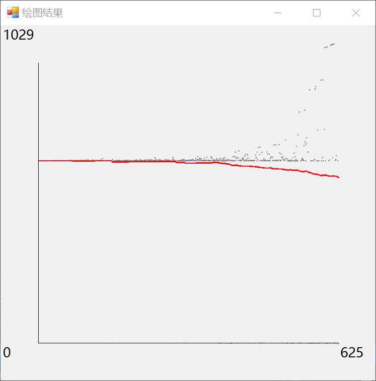
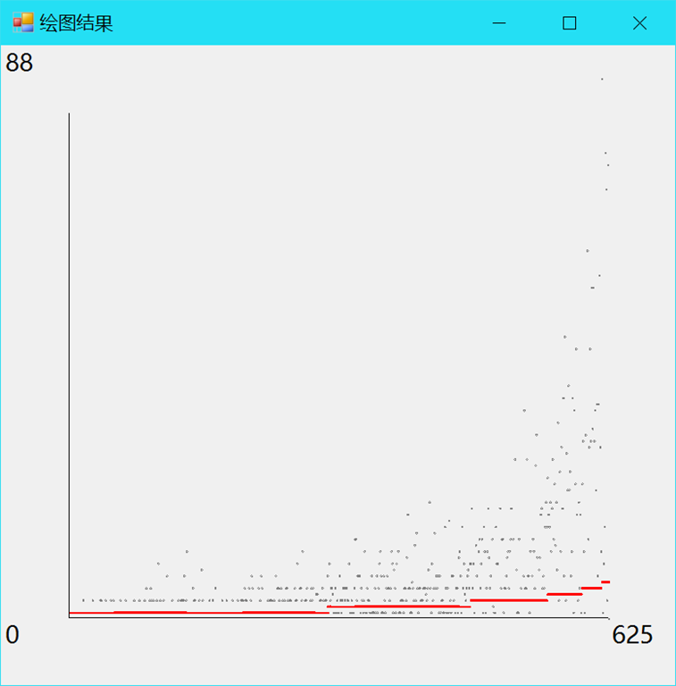

© 2019 《算法（第四版）》C# 题解 | Provided By 沈星繁
搜索解答
目前已完成到 2.5
1.5.16
上次更新：2019-02-11
发现了题解错误/代码缺陷/排版问题？请点这里：如何：提交反馈 。
题目
1.5.16
均摊成本的图像。
修改你为练习 1.5.7 给出的实现，绘出如正文所示的均摊成本的图像。
解答
给出绘图结果样例：


代码
仅给出绘图相关的代码，窗体部分见 github 上的代码：
using System;
using System.Linq;
using System.Windows.Forms;
using System.Drawing;
using UnionFind;
namespace _1._5._16
{
/*
* 1.5.16
*
* 均摊成本的图像。
* 修改你为练习 1.5.7 给出的实现，
* 绘出如正文所示的均摊成本的图像。
*
*/
static class Program
{
[STAThread]
static void Main()
{
Application.EnableVisualStyles();
Application.SetCompatibleTextRenderingDefault(false);
Compute();
Application.Run(new Form1());
}
static void Compute()
{
char[] split = { '\n', '\r' };
string[] input = TestCase.Properties.Resources.mediumUF.Split(split, StringSplitOptions.RemoveEmptyEntries);
int size = int.Parse(input[0]);
QuickFindUF quickFind = new QuickFindUF(size);
QuickUnionUF quickUnion = new QuickUnionUF(size);
string[] pair;
int p, q;
int[] quickFindResult = new int[size];
int[] quickUnionResult = new int[size];
for (int i = 1; i < size; ++i)
{
pair = input[i].Split(' ');
p = int.Parse(pair[0]);
q = int.Parse(pair[1]);
quickFind.Union(p, q);
quickUnion.Union(p, q);
quickFindResult[i - 1] = quickFind.ArrayVisitCount;
quickUnionResult[i - 1] = quickUnion.ArrayVisitCount;
quickFind.ResetArrayCount();
quickUnion.ResetArrayCount();
}
Draw(quickFindResult);
Draw(quickUnionResult);
}
static void Draw(int[] cost)
{
// 构建 total 数组。
int[] total = new int[cost.Length];
total[0] = cost[0];
for (int i = 1; i < cost.Length; ++i)
{
total[i] = total[i - 1] + cost[i];
}
// 获得最大值。
int costMax = cost.Max();
// 新建绘图窗口。
Form2 plot = new Form2();
plot.Show();
Graphics graphics = plot.CreateGraphics();
// 获得绘图区矩形。
RectangleF rect = plot.ClientRectangle;
float unitX = rect.Width / 10;
float unitY = rect.Width / 10;
// 添加 10% 边距作为文字区域。
RectangleF center = new RectangleF
(rect.X + unitX, rect.Y + unitY,
rect.Width - 2 * unitX, rect.Height - 2 * unitY);
// 绘制坐标系。
graphics.DrawLine(Pens.Black, center.Left, center.Top, center.Left, center.Bottom);
graphics.DrawLine(Pens.Black, center.Left, center.Bottom, center.Right, center.Bottom);
graphics.DrawString(costMax.ToString(), plot.Font, Brushes.Black, rect.Location);
graphics.DrawString(cost.Length.ToString(), plot.Font, Brushes.Black, center.Right, center.Bottom);
graphics.DrawString("0", plot.Font, Brushes.Black, rect.Left, center.Bottom);
// 初始化点。
PointF[] grayPoints = new PointF[cost.Length];
PointF[] redPoints = new PointF[cost.Length];
unitX = center.Width / cost.Length;
unitY = center.Width / costMax;
for (int i = 0; i < cost.Length; ++i)
{
grayPoints[i] = new PointF(center.Left + unitX * (i + 1), center.Bottom - (cost[i] * unitY));
redPoints[i] = new PointF(center.Left + unitX * (i + 1), center.Bottom - ((total[i] / (i + 1)) * unitY));
}
// 绘制点。
for (int i = 0; i < cost.Length; ++i)
{
graphics.DrawEllipse(Pens.Gray, new RectangleF(grayPoints[i], new SizeF(2, 2)));
graphics.DrawEllipse(Pens.Red, new RectangleF(redPoints[i], new SizeF(2, 2)));
}
graphics.Dispose();
}
}
}